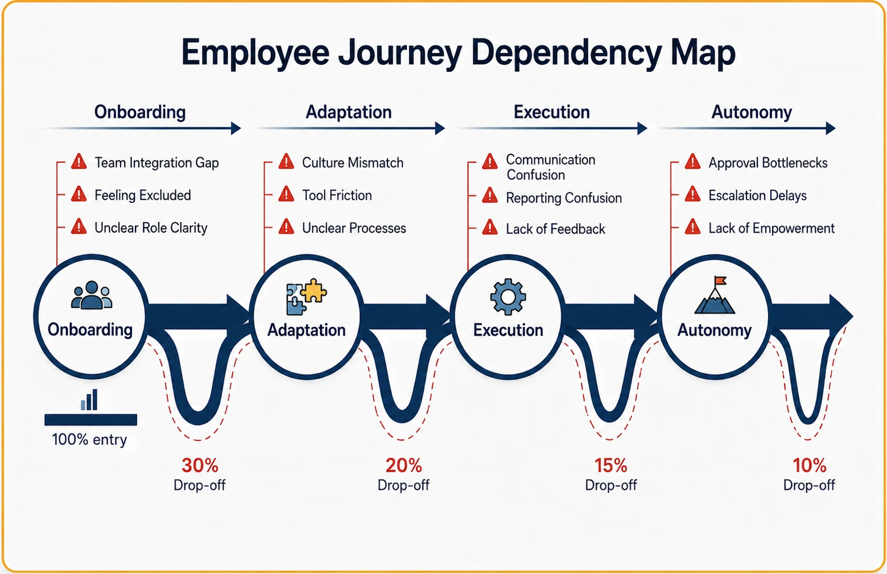
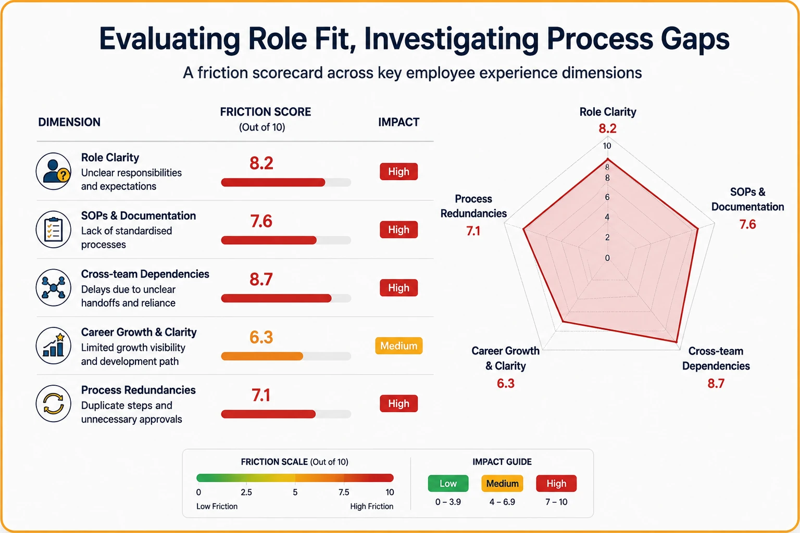
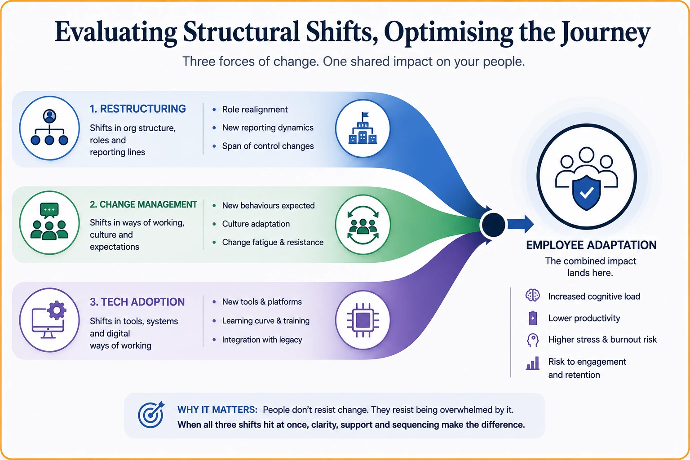

Strengthen Every Employee Experience for Business Performance & Growth
We audit and diagnose employee workflows, challenges, and build a supportive framework to reduce turnover and boost productivity.
Employee Experience Scope
Are Your Best Employees Leaving You?
Retaining top talent has always been a challenge for growing businesses. But it won't stay a mystery once you know your employee experience signals and insights.
What is Employee Experience?
- The perception that an employee develops about your organization through their day-to-day work interactions.
- These interactions occur at different touchpoints across the employee journey — from hiring to daily work to growth opportunities.
- What the employee looks for throughout this journey is whether the organization values their contribution, offers a clear path for growth and advancement, and whether they can trust its leadership and processes.
- It starts with recruitment and onboarding and continues through to long-term loyalty or attrition.
Why it Matters?
- Employee experience insights help you stay ahead of workforce trends and understand shifts in what talent expects.
- It shapes organisation loyalty and overall contribution or proactivity.
- Convert employee behavior insights into measurable outcomes like retention and productivity.
- Develop intelligent systems that meet employee expectations and reduce turnover cost.
How we work
Our Process Framework
Identify Challenges & Operational Inefficiencies
We investigate your existing employee touchpoints, identify areas of friction, and map them to uncover gaps across the employee journey
Strategy & Framework Design
We build customized frameworks using our employee experience data models, and prepare strategic roadmaps & processes that match your organizational goals and culture.
Support & Development
We help develop training and implementation programs — and offer support where needed — to close the gaps identified, enabling employees to grow and stay engaged.
Behavioral Intelligence Layer
Our Employee Experience Data Model
Identifying employee challenges at every point of their journey with a customized data model helps reduce workplace friction
Experiential Intelligence
Identifying Employee Dependencies, Evaluating Decision-Making Process
We study the touchpoints where employees feel trapped by systems and processes that limit their autonomous decision-making.
- Onboarding & team integration friction analysis
- Adaptation analysis — culture, teams and tools
- Communication & reporting systems analysis
- Process delays, escalations and approval bottlenecks
- Experience gap identification

Behavioral Design
Evaluating Role Fit, Investigating Process Gaps
A role that fits and a process that flows are not accidents — they should be designed to bring out an employee's best work, not work around them.
- Role Clarity & Transparency
- Standard Operating Procedures (SOPs)
- Cross-team dependencies and workplace fatigue
- Career growth & advancement clarity
- Process redundancies and workflow bottlenecks

Operational Optimization
Evaluating Structural Shifts, Optimizing Process Journey
Clarity through structural shifts — restructuring, technology change, or shifting responsibilities is essential to prevent ambiguity, protect trust, and retain your best people.
- Organizational restructuring impact
- Change management
- Technology adoption & knowledge gap analysis

Predictive intelligence
Employee Experience Performance Outcomes
Better employee experiences don't just improve morale. They make organizations more operationally efficient, stable, and scalable.
Reduce Turnover Leakage
Fixes the friction points that silently push good employees out
Accelerate Engagement Loops
Building an experience that reinforces motivation and ownership
Scale Without Breaking
Structural clarity that holds as teams and responsibilities grow
Resolve Escalations Faster
Keeping track of concerns and bottlenecks and triggering the right support
Reduce Replacement Costs
Design roles and processes around real employee friction points
Research Engine
Our Capability Stack
The engine that powers up every employee experience into measurable performance
Stack
Analyzes hiring quality and onboarding integration to identify early attrition risk.
Gathers feedback from peers, subordinates, and superiors to uncover blind spots in performance and behavior.
Evaluates individual and team objectives against organizational strategy to identify alignment gaps.
Identifies process redundancies and bottlenecks that slow down execution and delegation.
Assesses engagement and loyalty signals to uncover retention risk before it becomes attrition.
Pinpoints structural shifts that interrupt the employee journey and decision-making process.
Ready to Turn Employee Experience into Retention and Growth?
Let's identify the gaps, build the framework, and turn insights into retention and growth.